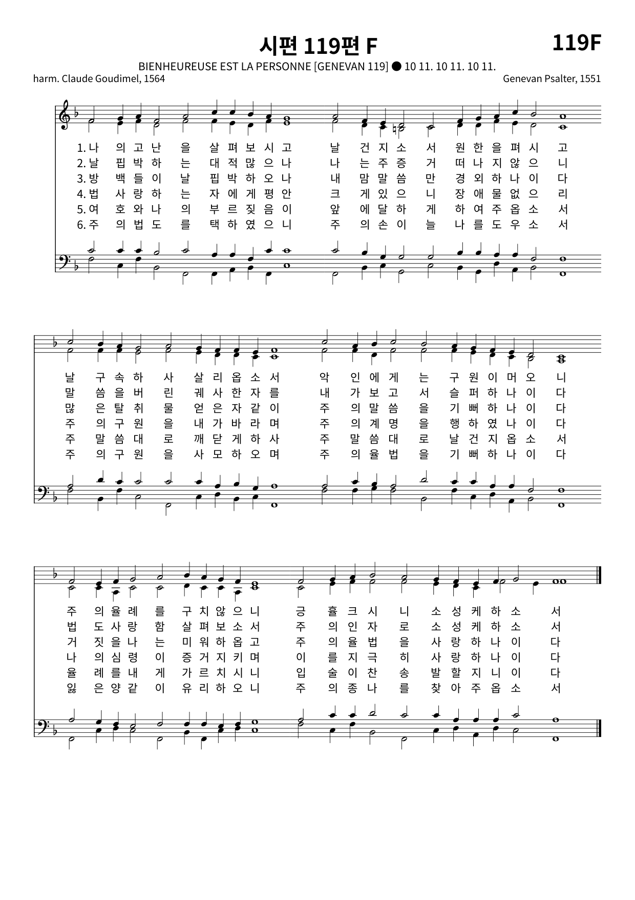

시편 119편 F
BIENHEUREUSE EST LA PERSONNE [GENEVAN 119] · 10 11. 10 11. 10 11.
곡조: Genevan Psalter, 1551 · 화성: Claude Goudimel, 1564 · 가사: 개역한글판 시편 119편 편역(AI 초벌 편역판 · 신학 감수 전) · 6절
시편 119편은 6곡으로 나누어 실었습니다: A B C D E F · 이 곡은 시편 119편 가사의 39~44번째 절입니다.
악보 PDF MusicXML(출력용) MusicXML(반주용, 전주·반복 포함) 개역한글 시편 119편 읽기
악보
← 시편 119편 E 목록반주 재생(준비 중)시편 120편 →
가사
1절
나의 고난을 살펴보시고
날 건지소서 원한을 펴시고
날 구속하사 살리옵소서
악인에게는 구원이 머오니
주의 율례를 구치 않으니
긍휼 크시니 소성케 하소서
나의 고난을 살펴보시고
날 건지소서 원한을 펴시고
날 구속하사 살리옵소서
악인에게는 구원이 머오니
주의 율례를 구치 않으니
긍휼 크시니 소성케 하소서
2절
날 핍박하는 대적 많으나
나는 주 증거 떠나지 않으니
말씀을 버린 궤사한 자를
내가 보고서 슬퍼하나이다
법도 사랑함 살펴보소서
주의 인자로 소성케 하소서
날 핍박하는 대적 많으나
나는 주 증거 떠나지 않으니
말씀을 버린 궤사한 자를
내가 보고서 슬퍼하나이다
법도 사랑함 살펴보소서
주의 인자로 소성케 하소서
3절
방백들이 날 핍박하오나
내 맘 말씀만 경외하나이다
많은 탈취물 얻은 자 같이
주의 말씀을 기뻐하나이다
거짓을 나는 미워하옵고
주의 율법을 사랑하나이다
방백들이 날 핍박하오나
내 맘 말씀만 경외하나이다
많은 탈취물 얻은 자 같이
주의 말씀을 기뻐하나이다
거짓을 나는 미워하옵고
주의 율법을 사랑하나이다
4절
법 사랑하는 자에게 평안
크게 있으니 장애물 없으리
주의 구원을 내가 바라며
주의 계명을 행하였나이다
나의 심령이 증거 지키며
이를 지극히 사랑하나이다
법 사랑하는 자에게 평안
크게 있으니 장애물 없으리
주의 구원을 내가 바라며
주의 계명을 행하였나이다
나의 심령이 증거 지키며
이를 지극히 사랑하나이다
5절
여호와 나의 부르짖음이
앞에 달하게 하여 주옵소서
주 말씀대로 깨닫게 하사
주 말씀대로 날 건지옵소서
율례를 내게 가르치시니
입술이 찬송 발할지니이다
여호와 나의 부르짖음이
앞에 달하게 하여 주옵소서
주 말씀대로 깨닫게 하사
주 말씀대로 날 건지옵소서
율례를 내게 가르치시니
입술이 찬송 발할지니이다
6절
주의 법도를 택하였으니
주의 손이 늘 나를 도우소서
주의 구원을 사모하오며
주의 율법을 기뻐하나이다
잃은 양 같이 유리하오니
주의 종 나를 찾아 주옵소서
주의 법도를 택하였으니
주의 손이 늘 나를 도우소서
주의 구원을 사모하오며
주의 율법을 기뻐하나이다
잃은 양 같이 유리하오니
주의 종 나를 찾아 주옵소서